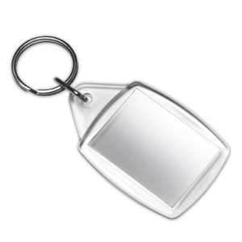
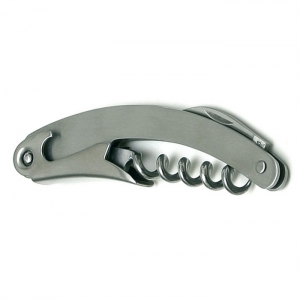
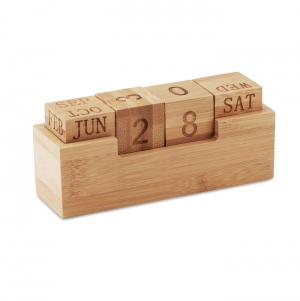
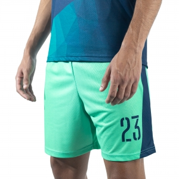
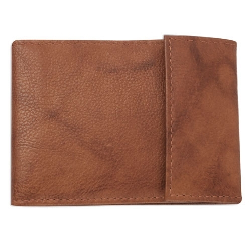
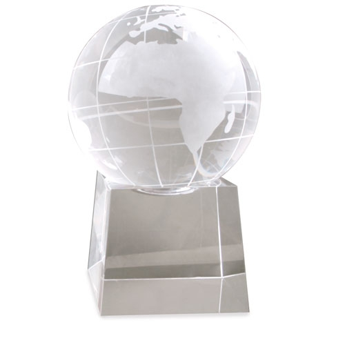
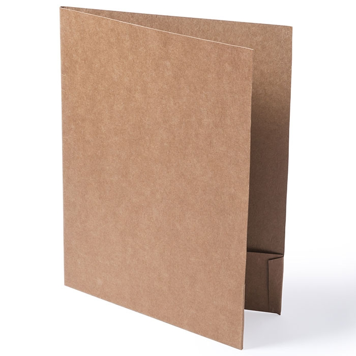

Família de materiais
Plásticos
ABS, PP, PVC, PET e Tritan: distinguir o polímero, a superfície e o uso previsto antes de escolher.
Explorar materiaisConheça sete famílias de materiais e compare o que importa para o seu brinde: utilização, aspeto, peso, resistência e manutenção. O acabamento e a construção do artigo também contam.

ABS, PP, PVC, PET e Tritan: distinguir o polímero, a superfície e o uso previsto antes de escolher.
Explorar materiais
Alumínio, aço inoxidável, ferro e zamak: compare peso, acabamento e construção do artigo.
Explorar materiais
Veios, tonalidades e superfícies: escolher com uma amostra e distinguir cada componente.
Explorar materiais
Algodão, poliéster, canvas e softshell: distinguir fibras, construção, gramagem e cuidados.
Explorar materiais
Um aspeto semelhante pode esconder composições e acabamentos diferentes. Comece pela ficha do artigo.
Explorar materiais
Copos, canecas e peças de oferta: distinguir corpo, superfície e decoração antes de definir o uso.
Explorar materiais
Folhas, capas e embalagens: avaliar escrita, impressão, rigidez e proteção no uso previsto.
Explorar materiaisVai transportar o artigo, usá-lo numa secretária ou lavá-lo frequentemente? Compare a capacidade, o peso completo, a pega e as instruções de manutenção.
Compare textura, brilho, espessura e construção. Defina a posição do logótipo e peça uma prova na referência e no acabamento escolhidos.